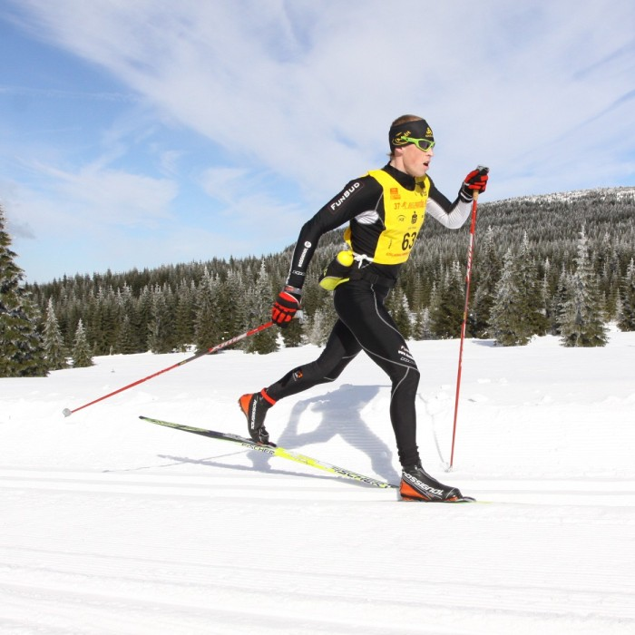

Biegi narciarskie wiele osób uprawia jako "piesze wycieczki na nartach", zmagaj±c siê ze szlakami o ró¿nych d³ugoœciach i stopniach trudnoœ¶ci.
W sporcie biegi narciarskie s± jedn± z trudniejszych konkurencji wytrzyma³o¶œciowych, anga¿uj±c± wszystkie g³ówne partie miꜶni. Sport ten, obok kolarstwa i wioœ¶larstwa prowadzi do spalania najwiêkszej iloœ¶ci kalorii w jednostce czasu.
Wszystkich chêtnych spróbowania bia³ego szaleñstwa zapraszam na indywidualne lub grupowe zajêcia.
728-499-708
norbertkuczera@wp.pl
norbertkuczera@wp.pl
